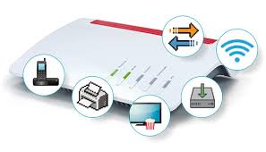

Hausaugabe
Sawsan-Difü Tarraf-Coding Atasi
Frage 1 Was ist derRJ45
Der Rj-Steker wird vor allem
MitPatchkabel (Lan-kabel) gemeinsam verwendet er dient
vor allem für Datenübertragung in Coputer Netswerk Der RJ 45
Arbeitet in Freyuenzbereichen von bis zu 250Megahertzund
kan bis 650Mhz angewendet weden
Er verfügt über 8 Pole
Frage 2 Was ist das wlan
Das Wlan (Wir ist der weg ins Network)
Ist der weg ins Netz
Ohne das Wlan kan man nicht ins Netz
Das wlan kan man per funksion verbinden

Frage 3
Was ist das Lan
Das Lan ist fast das gleich wie
Wlan aber keine fernverbindung
Und muss mit ein Kabel an ein rotur verbunden werden

Frage 4 Was sind die vorteile
& Nachteile bei Wlan u. Lan
Die Vorteile
Bei Wlan:
Es ist dratloss
Es hat ein einstellung namens Hotspot
Bei Lan:
Es ist sehr schnell
Und kein hacker kan sich in ein kabel reihn Hacken
Die Nachteile
Bei Wlan:
Es ist viel Langsamer
Und Schutz dich nich vor Cyber atken
Bei Lan:
Der Kabel
Frage 5 Wan ist es besserlan zubenutzen?
Es ist besser lan zubenutzen wen du schnelles
Internet brauchst oder zu viele leute den
gleich Router benutzen

Frage 6 Wozu ist der router zuschtändig
Der Router ist der Verwalter und verwaltet alle gärete
